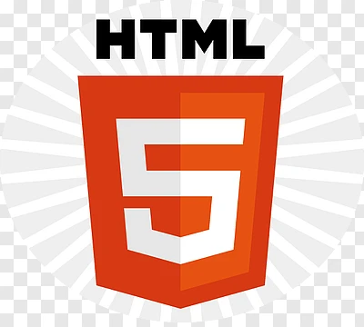

Despre mine
Mă numesc Racz Roberta, sunt anul I la Facultatea de Informatică și vreau să învăț cât mai multe despre WD.
Poză

Personal Skills
| Personal Skills | ||
|---|---|---|
| Programing | Python | JavaScript |
| C/C++ | Java | |
| Java | - | |
| Design | Figma | |
| Adobe XD | ||
| Photoshop | ||
| UI/UX | ||
| Other | Git | |
Portofoliu Proiecte
| Project Name | Description | Technologies | Difficulty | Link | ETC (Status) |
|---|---|---|---|---|---|
| Personal Website | Un site de prezentare realizat în cadrul laboratoarelor EWD. |
|
Vezi Repo | În lucru | |
| Task Manager App | Aplicație web pentru gestionarea task-urilor zilnice. |
|
Demo Live | Finalizat | |
| Toate proiectele sunt open-source și disponibile pentru colaborare. | N/A | ||||
| Total Proiecte | 2 | ||||